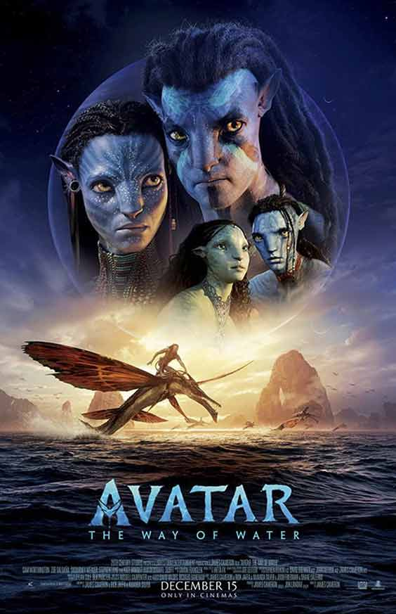
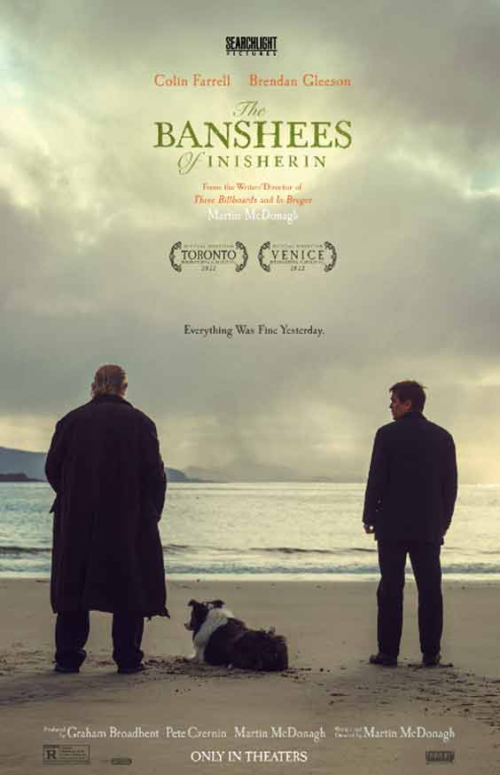
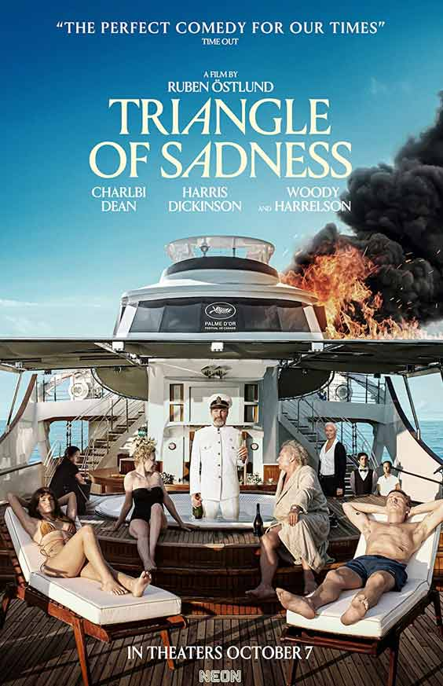
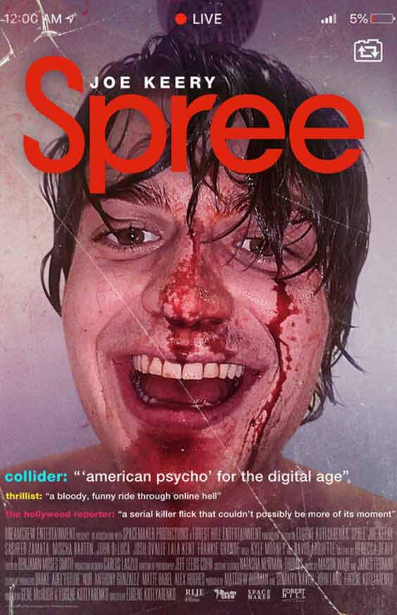

Buscar pelícuas
Tendencias
   Nuestro recomendado de la semana
Top Gun: Maverick
Top Gun: Maverick (comúnmente llamada Top Gun 2: Maverik) es una película de acción y drama estadounidense de 2022 dirigida por Joseph Kosinski, secuela de la película de 1986 Top Gun. Se estrenó el 27 de mayo de 2022 en Estados Unidos. Originalmente estaba programada para su lanzamiento el 12 de julio de 2019, pero se pospuso para "permitir que la producción resuelva todas las complejas secuencias de vuelo".4 Debido a la pandemia de COVID-19 y los conflictos de programación, la película experimentó más retrasos.
Top Gun: Maverick se estrenó en la CinemaCon el 28 de abril de 2022 y se estrenó en los cines de los Estados Unidos en IMAX, 4DX,5 ScreenX6 y en Dolby Cinema7 el 27 de mayo de 2022, por Paramount Pictures. También se estrenará en Paramount+ después de su presentación en cines y en la región latina en star+ en 2022 en el mes de diciembre del La película esta dedicada a la memoria de Tony Scott.
El texto de apertura menciona cómo en 1969 la Marina de los Estados Unidos estableció una escuela para pilotos de combate. Se la conoce oficialmente como Escuela de Armas de Combate, pero los reclutas la llaman "Top Gun". Se ven varios reclutas y hombres de la Marina en los barcos donde los pilotos despegan o regresan.